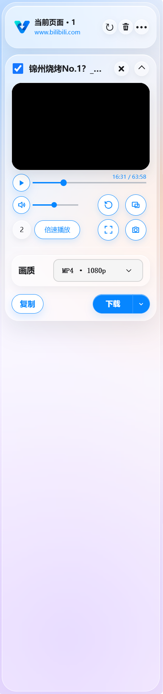
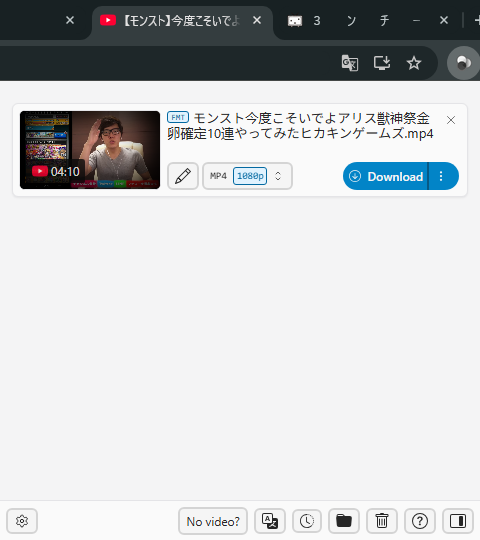

Chrome 网页视频下载扩展
vcatch
网页视频，轻轻带回本地。
在浏览器里发现视频、预览内容、选择画质，再交给电脑上的 yt-dlp 下载与 FFmpeg 合并。从网页到本地文件，在熟悉的侧栏里完成。
Windows 测试版 · Chrome 扩展 · 本地下载与合并

从发现到保存
三个步骤，留住想看的内容。
发现视频
打开含有视频的网页并播放，让扩展发现页面加载的媒体资源。
预览与选择画质
在侧栏确认视频内容，从可用的媒体资源或画质选项中选择。
保存到本地
将下载交给本地工具；需要时由 FFmpeg 合并视频与音频。
围绕下载，恰到好处
浏览器负责发现，本地工具负责保存。
网页媒体发现
发现网页播放过程中加载的媒体资源，在侧栏集中查看候选内容。
侧栏媒体预览
在当前页面旁预览媒体，确认内容后再选择可用画质，减少来回切换。
yt-dlp 下载增强
通过本地桥接调用 yt-dlp，补充站点解析与下载能力；实际支持取决于站点与资源状态。
FFmpeg 本地合并
对于分离的视频与音频，使用本机 FFmpeg 合并，文件保存在自己的电脑上。
各司其职，流程更顺
熟悉的浏览器，加上本地下载工具。
vcatch：把网页媒体带到眼前
扩展运行在 Chrome 中，负责发现网页媒体、展示资源、预览内容与发起下载。它提供操作入口，并通过桥接程序连接本地工具。
yt-dlp + FFmpeg：在电脑上完成下载与合并
yt-dlp 提供更广的站点解析和下载支持，FFmpeg 负责需要的音视频合并。下载与合并在本机执行，媒体仍从来源站点获取；站点限制、登录状态和内容保护会影响可用性。
打开侧栏，就在手边
看得见内容，也找得到资源。

开始前，先了解
常见问题
vcatch 是什么？
它是一款面向 Chrome 的网页视频下载扩展，将网页媒体发现与侧栏预览，和本地 yt-dlp、FFmpeg 工具连接起来，帮助你保存有权下载的内容。
为什么要结合 yt-dlp？
网页资源发现和站点解析各有适用场景。yt-dlp 补充站点解析、画质选择与下载能力，FFmpeg 处理需要合并的音视频，让扩展能够使用本地工具完成后续工作。
支持哪些网站？能下载所有视频吗？
可以尝试扩展发现的网页媒体，以及 yt-dlp 支持的站点。并非每个网站或视频都能下载：站点更新、登录权限、资源有效期和内容保护都可能限制下载，不承诺支持所有网站或受 DRM 保护的内容。
需要预先安装 Python、yt-dlp 或 FFmpeg 吗？
不需要。Windows 测试版安装包已包含所需运行环境和工具，解压后按安装教程加载扩展并安装本地桥接即可。
下载的文件保存在哪里？默认是什么格式？
Windows 测试版默认保存到当前用户的 Downloads（下载）文件夹，默认输出 MP4。最终可用画质与音视频内容取决于来源资源。
下载时需要注意什么版权与授权限制？
请只下载你拥有版权、已获授权或允许下载的内容，并遵守来源网站的使用条款。扩展不提供绕过访问权限或内容保护的授权。
Windows 测试版
安装教程
准备好 Chrome，按顺序完成扩展与本地桥接安装。
下载并解压
通过页面底部的下载入口获取 Windows 测试版，将压缩包完整解压到本地文件夹。
加载 Chrome 扩展
打开 Chrome 的“扩展程序 → 管理扩展程序”，开启“开发者模式”，点击“加载已解压的扩展程序”，选择包含 manifest.json 的扩展文件夹。
运行桥接安装程序
运行解压目录中的本地桥接安装程序，按提示完成配置，让浏览器能调用电脑上的下载与合并工具。
打开侧栏开始使用
进入视频网页并播放内容，打开 vcatch 侧栏，预览、选择画质，然后保存到本地。
Windows 可能显示安全提示。请先确认文件来自本页所链接的官方仓库发布页，再决定是否允许运行。
让好内容，随时可看
准备好保存第一个视频了吗？
从 Windows 测试版开始，连接 Chrome 与本地下载工具。